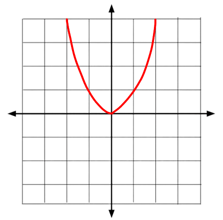
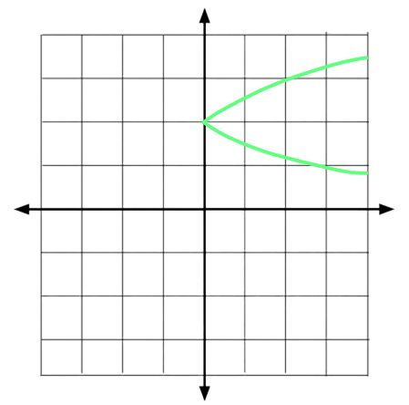
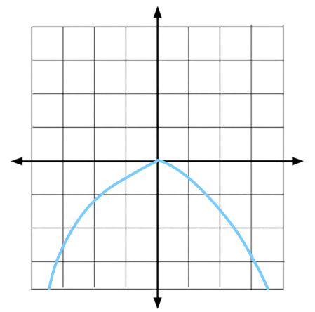
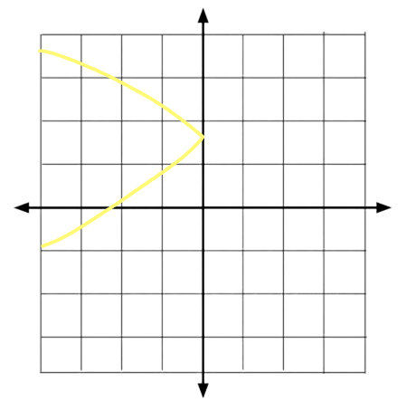

A parabola is a shape commonly found within graphing quadratics and is shaped as a U-shaped curve...

A parabolas direction and shape can change vastly depending on the slope of the quadratic that forms it...



The general formulas for parabolas are usually expressed in vertex form which is...
The general formula for a parabola changes depending on the direction of where it's going and where the vertex is...
| Parabola Formulas (Vertex is 0, 0) | ||
|---|---|---|
| Parabola Direction | Equation | |
| Points Up | y2 = 4ax | |
| Points Down | y2 = -4ax | |
| Points Left | x2 = -4ay | |
| Points Right | x2 = -4ay | |
| Parabola Formulas (Vertex isn't 0, 0) | ||
|---|---|---|
| Parabola Direction | Equation | Vertex Coordinates |
| Vertical | y = (x - h)2 + k | (h, k) |
| Horizontal | x = (y - h)2 + k | (h, k) |
As you can see, the formula of a parabola changes depending on its direction and its vertex coordinates.
A parabola is made out of many different points and lines that are crucial to actually graphing it.
The vertex of a parabola is the highest/lowest point of it. Now the vertex being the lowest or highest point depends on which direction the parabola opens from.